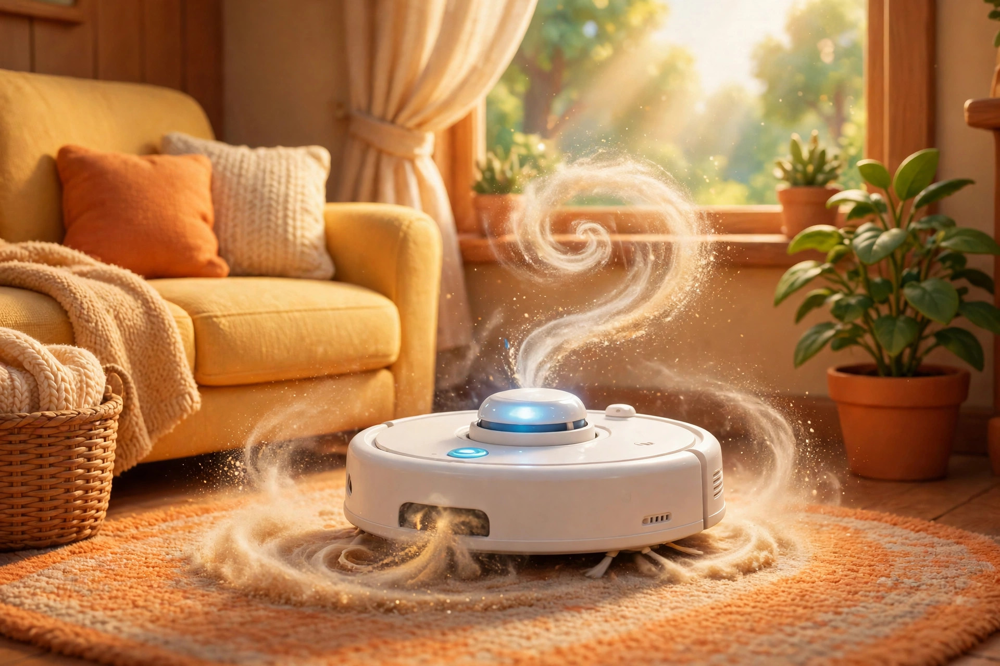

Unit 5 · Inventions — Lesson 3: Listening & Speaking · Grade 10 · Extra Class (B1+–B2)
Present perfect (have / has + V3) — the past action is still true or important NOW, or the time is not finished / not stated. Signals: since, for, just, already, yet, ever, never.
• We have used RoboClean since Monday.
• She has just charged her e-reader.
Past simple (V2 / -ed) — the action finished at a stated past time. Signals: yesterday, last week, in 2020, two hours ago.
• We tested RoboClean in the library yesterday.
Use a gerund (V-ing) after verbs such as enjoy, avoid, finish — and as the subject of a sentence.
• Students enjoy chatting with the chatbot.
• Reading on an e-reader saves space.
Use a to-infinitive (to-V) after verbs such as want, decide, allow — and after It's + adjective.
• The school decided to buy a robot vacuum.
• It's convenient to learn with apps.
⚠️ Watch out! A finished time word (yesterday, in 2020, ago) NEVER goes with the present perfect: We tested it yesterday. (NOT have tested). And remember: like, love, hate can be followed by BOTH forms: I like playing / to play computer games.
One Monday morning, a big box arrived at the school library of Mai and Tuan's school. Inside was a brand-new robot vacuum cleaner called RoboClean X2. The teacher opened the instruction book and showed the class the buttons on the top of the machine: Clean, Extra clean and Start. “Before we use it,” she said, “we must charge it for five hours, until the battery is full.”
After lunch, Tuan pressed the Start button and then the Clean button. The little round robot moved by itself and cleaned the whole library floor. When Mai dropped her biscuit, crumbs and dirty stains appeared on the carpet, so the class pressed Extra clean to remove them. A few minutes later, the robot turned towards the wet floor near the wash basin. “Stop!” the teacher warned. “Never use RoboClean on a wet floor or in water. It is dangerous for the machine.”
The robot worked for about fifty minutes before its battery became weak and it returned to its charging dock by itself. While it was cleaning, the students timed it and wrote the results in a table for their science lesson. At the end of the test, everyone agreed that RoboClean X2 was very useful. “I want one more button,” Mai said. “A Timer button, so we can set the cleaning time ourselves!”
PART 1 — Complete the form: ROBOCLEAN X2 DEMO SESSION
PART 2 — True or False?

Useful language: First, … · Then, … · Next, … · After that, … · Finally, … · Press the … button. · Charge it for … hours before you use it. · Never use it on a wet floor. · Let it return to its charging dock.
A: Let me show you how to use RoboClean X2. First, charge it for five hours before you use it for the first time. Then, press the Start button to turn it on. Next, press Clean, and the robot will clean the whole floor by itself. If there are dirty stains, press Extra clean. Finally, never use it on a wet floor, and let it return to its charging dock when the battery is weak.
B: How long can it clean on one charge?
A: About fifty minutes.
Sentence starters: RoboClean X2 is a … · First, you should … · Then, press … · Next, … · Remember: never … · Finally, …
Useful language: robot vacuum cleaner · charge · button · Clean · Extra clean · Start · stains · wet floor · charging dock · battery
RoboClean X2 is a smart robot vacuum cleaner that cleans your house by itself. First, charge it for five hours before you use it for the first time, until the battery is full. Then, press the Start button and choose Clean to clean the whole floor. If there are dirty stains or crumbs, press Extra clean. Remember: never use RoboClean on a wet floor or in water, because this is dangerous for the machine. After about fifty minutes, the robot returns to its charging dock by itself. Used safely, RoboClean X2 is a convenient helper for every family.
Take a photo/screenshot of your report card and send it to your teacher!
| Part | Score |
|---|---|
| Warmer game (Lesson 2) | – |
| Vocabulary — Matching | – |
| Vocabulary — Gap-fill | – |
| Grammar check | – |
| Video check — Order the events | – |
| Video check — True / False | – |
| Reading | – |
| Listening — Form completion | – |
| Listening — True / False | – |
| Homework A — Vocabulary | – |
| Homework B — Mixed grammar | – |
| Homework C — The story | – |